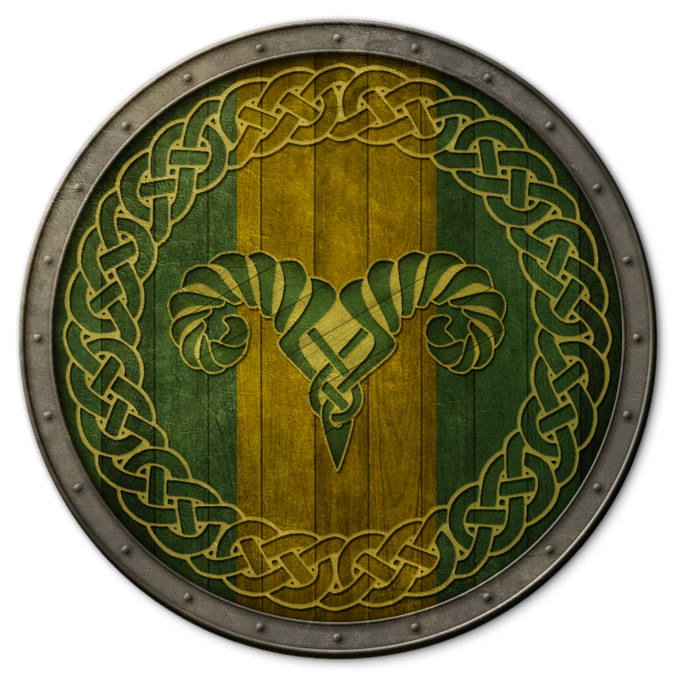
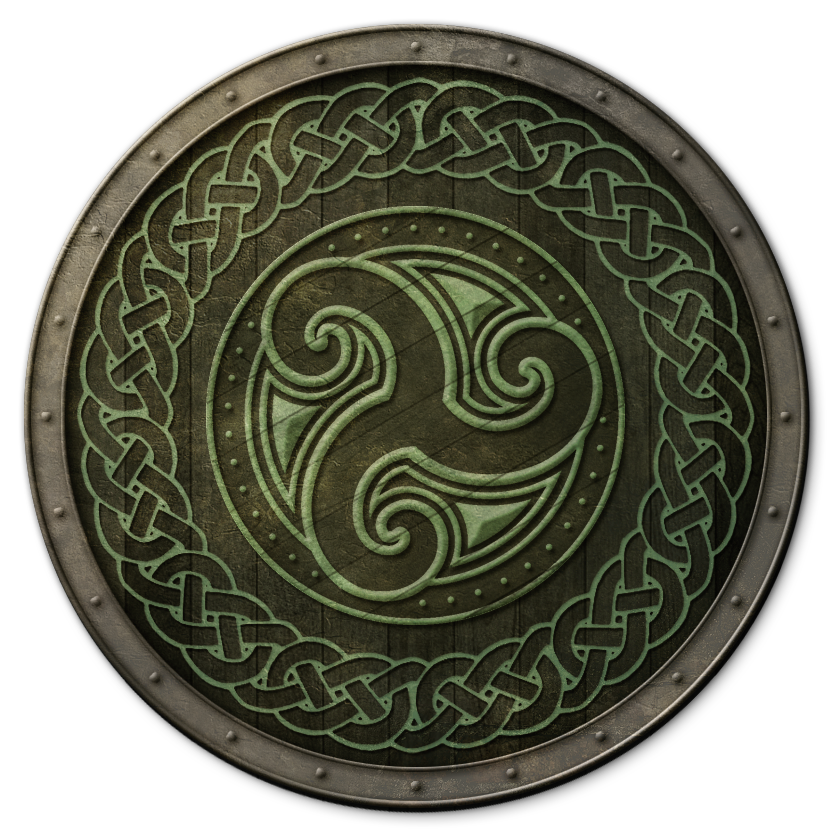
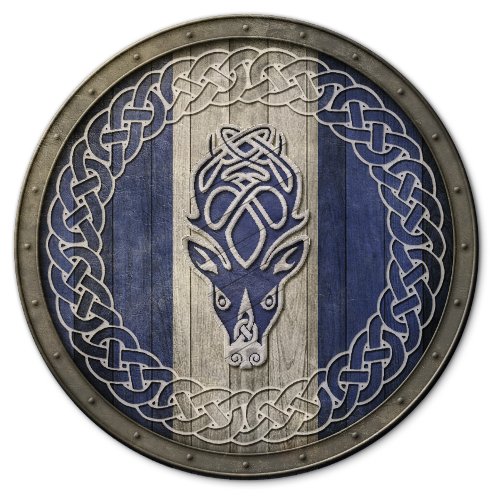
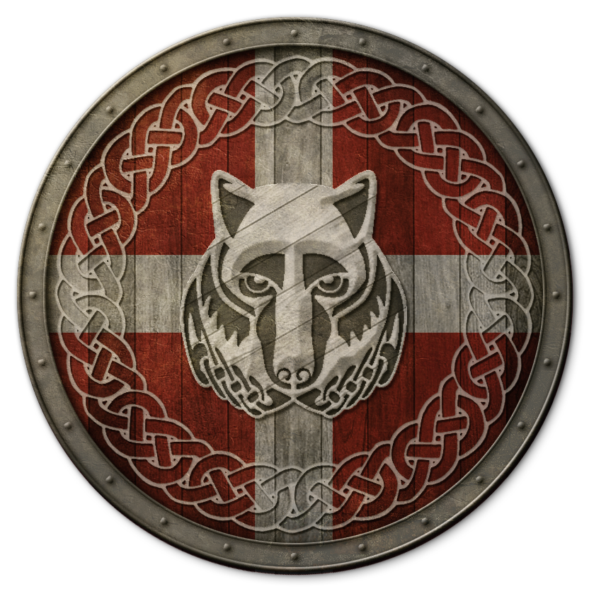
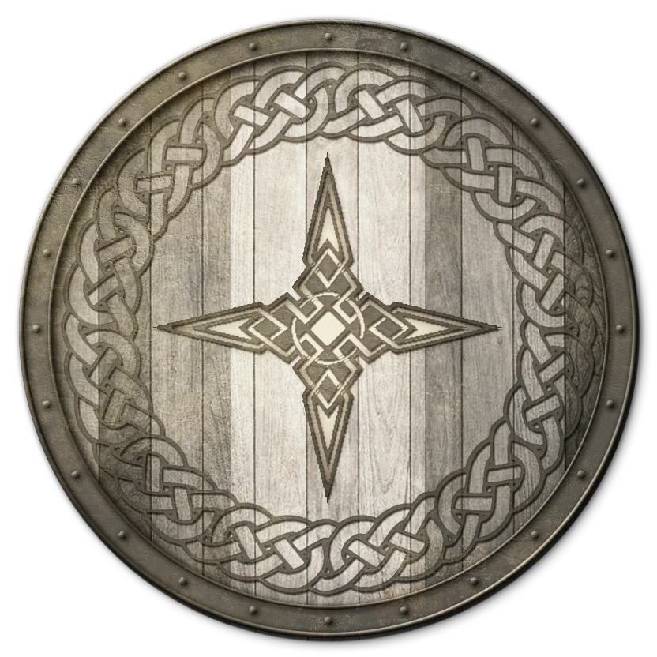
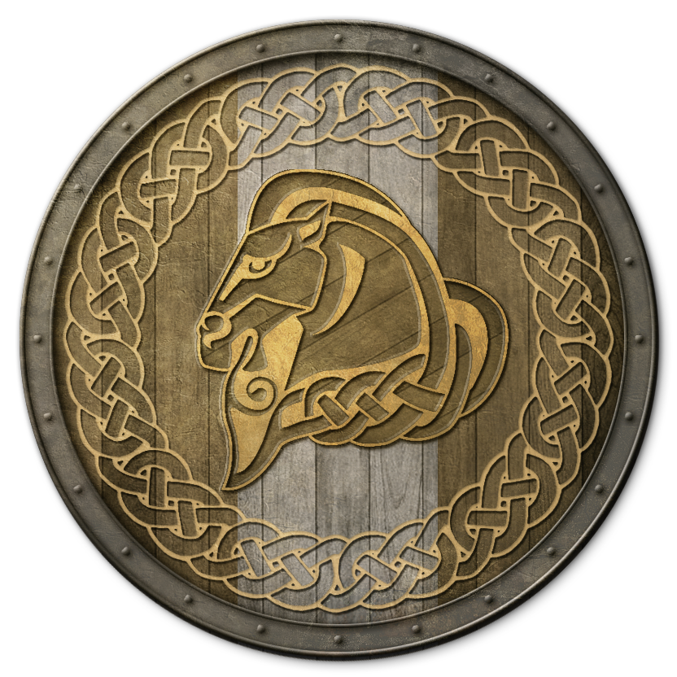
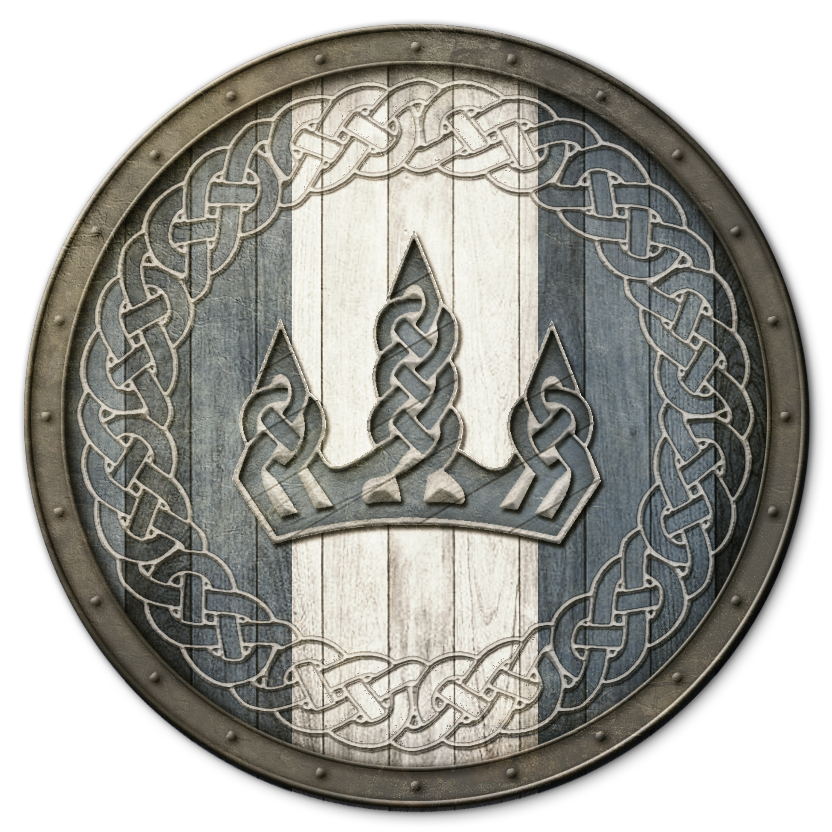
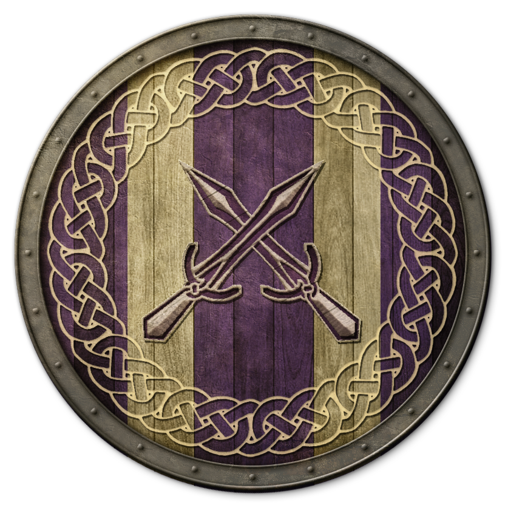
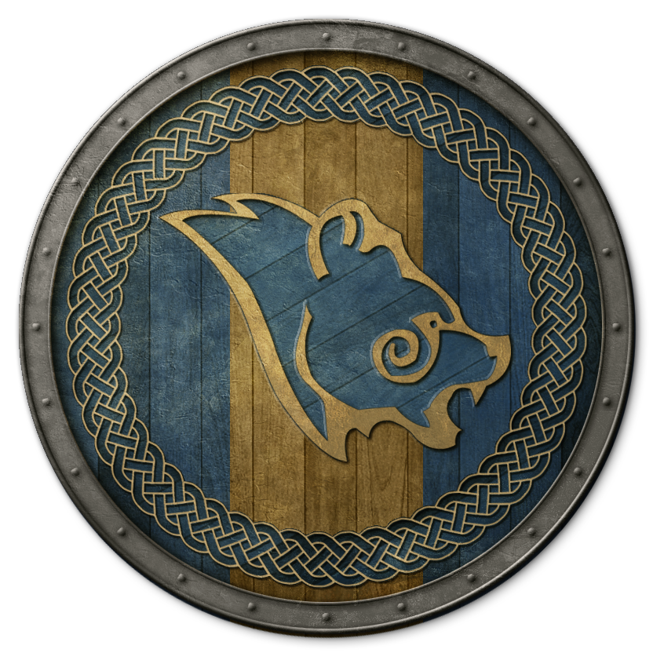

Base game
Main Quest
College of Winterhold
Dark Brotherhood
The Companions
Thieves Guild
Daedric Quests
Bard's College
Imperial Legion
Stormcloaks
The Nine Holds
The Reach
Hjaalmarch
Falkreath Hold
Haafingar
The Pale
Whiterun
Winterhold
The Rift
Eastmarch
Dawnguard
Main Quest
Dawnguard
Clan Volkihar
Side Quests
Miscellaneous
Dragonborn
Main Quest
Raven Rock
Skaal Village
Tel Mithryn
Thirsk Mead Hall
Other quests
Other Quests
Dungeon Miscellaneous
Favors
Blackreach
Creation Club
Alternative Armours
Fishing
Other Quests
Search
Progress
0%
Main Quest
Act I
Unbound
Before the Storm
Bleak Falls Barrow
Dragon Rising
The Way of the Voice
The Horn of Jurgen Windcaller
Act II
A Blade in the Dark
Diplomatic Immunity
A Cornered Rat
Alduin's Wall
The Throat of the World
Elder Knowledge
Alduin's Bane
Act III
The Fallen
Season Unending
Paarthurnax
The World-Eater's Eyrie
Sovngarde
Dragonslayer
College of Winterhold
Main questline
Visit the College of WInterhold
First Lessons
Under Saarthal
Hitting the Books
Good Intentions
Revealing the Unseen
Containment
The Staff of Magnus
The Eye of Magnus
Side quests
Arniel's Endeavor
Brelyna's Practice
J'zargo's Experiment
Onmund's Request
Out of Balance
Rejoining the College
Tolfdir the Absent-Minded
Radiant quests
Enchanting Pick-Up
Restocking Soul Gems
Aftershock
Fetch me that Book!
Shalidor's Insights
Master Mage Skills
Alteration Ritual Spell
Conjuration Ritual Spell
Destruction Ritual Spell
Illusion Ritual Spell
Resotration Ritual Spell
Dark Brotherhood
Main questline
Delayed Burial
Innocence Lost
With Friends Like These...
Sanctuary
Mourning Never Comes
Whispers in the Dark
The Silence Has Been Broken
Bound Until Death
Breaching Security
The Cure for Madness
Recipe for Disaster
To Kill an Empire
Death Incarnate
Hail Sithis!
Contracts
Contract: Kill Beitild
Contract: Kill Narfi
Contract: Kill Ennodius Papius
Contract: Kill Lurbuk
Contract: Kill Hern
Contract: Kill Deekus
Contract: Kill Ma'randru-jo
Contract: Kill Anoriath
Contract: Kill Agnis
Contract: Kill Maluril
Contract: Kill Helvard
Contract: Kill Safia
Side quests
Locate the Assassin of Old
Honor Thy Family
Dark Brotherhood Forever
Other quests
Destroy the Dark Brotherhood!
Where You Hang Your Enemy's Head
The Companions
Main questline
Take Up Arms
Proving Honor
The Silver Hand
Blood's Honor
Purity of Revenge
Glory of the Dead
Side quests
Stealing Plans
Striking the Heart
Retrieval
Totems of Hircine
Purity
Radiant quests
Animal Extermination
Hired Muscle
Trouble in Skyrim
Family Heirloom
Escaped Criminal
Rescue Mission
Dragon Seekers
Thieves Guild
Main questline
A Chance Arrangement
Taking Care of Business
Loud and Clear
Dampened Spirits
Scoundrel's Folly
Speaking With Silence
Hard Answers
The Pursuit
Trinity Restored
Blindsighted
Darkness Returns
Under New Management
Side quests
Imitation Amnesty
Summerset Shadows
Silver Lining
The Dainty Sload
No Stone Unturned
Radiant quests
The Bedlam Job
The Fishing Job
The Numbers Job
The Burglary Job
The Heist Job
The Shill Job
The Sweep Job
Daedric Quests
The Black Star
Boethiah's Calling
A Daedra's Best Friend
Discerning the Transmundane
Ill Met By Moonlight
The Cursed Tribe
Pieces of the Past
The Whispering Door
The Break of Dawn
The House of Horrors
The Taste of Death
The Only Cure
A Night to Remember
The Mind of Madness
Waking Nightmare
Bard's College
Tendind the Flames
Rjorn's Drum
Finn's Lute
Pantea's Flute
Civil War
Imperial Legion
Joining the Legion
The Jagged Crown
Message to Whiterun
Battle for Whiterun
Reunification of Skyrim
A False Front
The Battle for Fort Dunstad
Compelling Tribute
The Battle for Fort Greenwall
The Battle for Fort Sungard
Rescue from Fort Kastav
The Battle for Fort Neugrad
The Battle for Fort Amol
Battle for Windhelm
Stormcloaks
Joining the Stormcloaks
The Jagged Crown
Message to Whiterun
Battle for Whiterun
Liberation of Skyrim
Rescue from Fort Neugrad
Compelling Tribute
The Battle for Fort Sungard
The Battle for Fort Greenwall
A False Front
The Battle for Fort Snowhawk
The Battle for Fort Hraggstad
Battle for Solitude
The Nine Holds
The Reach

Side quests
The Lost Expedition
The Heart of Dibella
The Forsworn Conspiracy
No One Escapes Cidhna Mine
Miscellaneous quests
Buy Dwarven artifact
Coated in Blood
Delivery to Calcelmo
Dibella's Shine
Nimhe, the Poisoned One
Recover Hrolfdir's Shield
Search and Seizure
Skilled Apprenticeship
The Steward's Potion
Sanuarach Mine
Soljund's Sinkhole
Kolskeggr Mine
Rogatus's Letter
The Ghost of Old Hroldan
Gharol's Message
Other quests
Bothela's Discreet Delivery
Thane of the Reach
Lisbet's Missing Shipment
Speak to Degaine
Skilled Apprenticeship
Hjaalmarch

Side quests
Laid to Rest
Rising at Dawn
Forbidden Legend
Other quests
Falio'n Secret
For the Good of Morthal
Thane of Hjaalmarch
Build Your Own Home
Falkreath Hold

Miscellaneous quests
Dark Ancestor
Some Light Theft
Thane of Falkreath
Kill the Bandit Leader
Hunter and Hunted
Find Runil's Journal
Speak to Lod
Steal the Private Letter for Dengeir
Composure, Speed, and Precision
Other quests
Build Your Own Home
Haafingar

Side quests
Lights Out!
The Man Who Cried Wolf
The Wolf Queen Awakened
Miscellaneous quests
Return to Grace
The Spiced Wine
Fit for a Jarl
News is Good News
Elisif's Tribute
Dragon's Breath Mead
Thane of Haafingar
The Pale

Miscellaneous quests
Visit the Museum in Dawnstar
Salty Sea-Dogs
Thane of Pale
Other quests
Build Your Own Home
Whiterun Hold

Side quests
Missing in Action
In My Time of Need
The Blessings of Nature
The Golden Claw
Miscellaneous quests
Andurs' Arkay Amulet
Greatsword for a Great Man
Bullying Braith
Argonian Ale Extraction
Salt For Arcadia
A Lovely Letter
Erik the Slayer
The Words of Power
Thane of Whiterun
Winterhold Hold

Miscellaneous quests
Drowned Sorrows
Some Light Theft
Thane of Winterhold
The Rift

Side quests
Promises to Keep
Unfathomable Depths
The Book of Love
Kyne's Sacred Trials
Miscellaneous quests
Retrieve Grimsever
The Lover's Requital
Truth Ore Consequences
Ingun's Task
The Raid
Supply and Demand
Sealing the Deal
Stoking the Flames
Ice Cold
Hunt and Gather
Caught Red Handed
Ringmaker
Pilgrimage
Special Delivery
Flight or Fight
Grin and Bear It
The Straw that Broke
Climb The Steps
Bow to the Master
Smooth Jazbay
Mine or Yours
Special Delivery (after Mine or Yours)
Spread the Love
Distant Memories
Consider Adoption
Surgery
Bring It!
Bloody Nose
Few and Far Between
I Done Got Thaned!
The Bonds of Matrimony
Under the Table
Stabilized
Helping Hand
Eastmarch

Side quests
Blood on the Ice
Repairing the Phial
The White Phial
Rise in the East
Miscellaneous quests
Harsh Master
Find the Thalmor Assassin
Argonian Dock Workers
Shahvee's Amulet
That Was Always There
The Forgemaster's Fingers
Find Roggi Knot-Beard's Ancestral Shield
Extracting an Argonian
Dravynea's Frost Salts
Thane of Eastmarch
Dawnguard
Main Quest
Dawnguard
Awakening
Bloodline
Join the Dawnguard
A New Order
Prophet
Join the Vampires
The Bloodstone Chalice
Prophet
Seeking Disclosure
Scroll Scouting
Chasing Echoes
Beyond Death
Unseen Visions
Touching the Sky
Dawnguard Quests
Ancient Technology (6 times)
Bolstering the Ranks
Cleansing Light
Hide and Seek
Hunting the Monster
A Jarl's Justice
Lost Relic (3 Times)
Preemptive Strike
Rescue
Clan Volkihar Quests
Amulets of Night Power
Ancient Power (4 Times)
Culling the Beast
Deceiving the Herd
Destroying the Dawnguard
The Gift
The Hunt
New Allegiances
Protecting the Bloodline
Rings of Blood Magic
Side Quests
Impatience of a Saint
Lost to the Ages
Miscellaneous
Durnehviir
Forgotten Vale Books
Soul Cairn Horse
Dragonborn
Main Quest
Dragonborn
The Temple of Miraak
The Fate of the Skaal
Cleansing the Stones
The Path of Knowledge
The Gardener of Men
At the Summit of Apocrypha
Raven Rock
Black Book: The Winds of Change
The Final Descent
March of the Dead
A New Debt
Served Cold
An Axe to Find
Clean Sweep
Feeding the Addiction
Fetch the Netch
First Edition
It's All in the Taste
Paid in Full
Pain in the Necklace
Recipe for Distraction
Skaal Village
Filial Bonds
Lost Legacy
A New Source of Stalhrim
Convince Nikulas to stay in Skaal Village
Kill the Bandit Leader
Skaal Village Disalogue
Tel Mithryn
Azra's Staffs
Black Book: The Hidden Twilight
Briarheart Necropsy
Experimental Subject (A)
From the Ashes
Healing a House
Heart Stones
Lost Knowledge
Old Friends
Reluctant Steward
Telvanni Research
Wind and Sand
Experimental Subject (B)
Hunting and Gathering
Thirsk Mead Hall
The Chief of Thirsk Hall
Retaking Thirsk
Elmus Favor (Berries)
Elmus Favor (Mead)
Halbarn Favor
Hilund Favor
Other Quests
Black Book: Filament and Filigree
Black Book: The Sallow Regent
Black Book: Untold Legends
Deathbrand
The Ebony Warrior
Unearthed
Black Book
Hrodulf's Madness
The Kagrumez Gauntlet
Sell Stalhrim Armour and Weapons to Ancarion
Speak to Ralis Sedarys
Summoning Karstaag
Visit the hunters at Frostmoon Crag
Other Quests
Dungeon Miscellaneous
Angarvunde
Ansilvund
The Affairs of Hagravens
Frostflow Abyss
Coming of Age
Mistwatch
Moss Mother Cavern
Telrav's Request
Ragnvald
Rebel's Cairn
Robber's Gorge
Lifting the Shroud
Sleeping Tree Cave
The Savior of Selveni Nethri
A Scroll for Anska
Ancestral Worship
Evil in Waiting
Infiltration
Repentance
Siege on the Dragon Cult
Silenced Tongues
Favors
Amulet of the Moon
Blackreach
A Return to Your Roots
Creation Club
Alternative Armours
Missing Merchant
Beyond the Grave
Tilted Scales
Bones for a Crow
Fan Favorite
Mightier than the Sword
Once A Hunter
Heart of Crimson
Brothers in Irons
Double-Edged
Smith 'N Slash
Gambler's Edge
When the Cat's Away
Ancient Ice
Over the Edge
Fishing
Angler Acquaintances
Beneath Bronze Waters
Clear-Headed
Catch of the Day
Caught in the Rain
Crustacean Extermination
Darkest Depths
End of the Line
Fishing Legend
Frozen Fish
Further Study
Heart of Gold
In A Pinch
No Contest
Private Lessons
Rubbish Retrieval
Spirits Away
Stocking Up
The Ultimate Feast
Tusked Terror
Two of a Kind
Wave Breaker
Other Quests
Creature of Legend
Horse Whisperer
Unholy Vigil
Vile Whispers
The Gray Cowl of Nocturnal
The Cause
The Consequences
Caught in a Web
Legends Lost
If I had a Hammer
Put a Fork in it
Shadowfoot Sanctum
Through a Glass, Darkly
Crypt of the Heart
The Staff of Hasedoki
Saturalia Preparation
Amber and Madness Smithing
Balance of Power
Golden and Dark Smithing
My Pet Elytra
Nerveshatter
Restoring Order
Staada Quest
Nordic Jewelry
Pets of Skyrim
The Rising Dead
Interception
The Edge of Ruin
My Pet Nix-Hound
More Than You Can Chew
The Sanctuary and the Manufactory
Myrwatch
Blue in the Face
A Matter of Pride
Blood in the Water
Hendraheim
Gift of Kynareth
Stealer of Souls
Swift as an Arrow
The Arms of Chaos
A Dying Wish
Fortunate Son
The Pit
Guests for Dinner
Let Sleeping Wolves Lie
In the Shadows
The Lost Paladin
Battle of the Champions
A Soul Divided
Bloodthirst
The Restless
The Pilgrim's Path
Relics of the Crusader
My Pet Mudcrab
Night Hunter
A Farmer's Life for Me
The Unquiet Dead
The Dwarven Crown
The Dwarven Horse
Forgotten Seasons
Dreams of the Dead
Ashen Heart
Buyer Bewear
Careless Curation
Ghosts of the Tribunal
Her Word Against Theirs
Trueflame